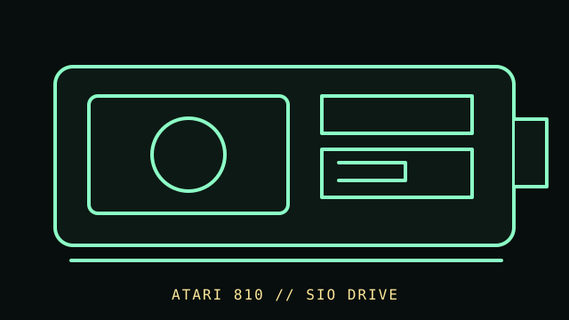

[ FLOPPY DRIVES // IDENTIFIED MODEL ]
Atari 810 Disk Drive
The Atari 810 is an external 5.25-inch disk drive for Atari 8-bit computers, with system-specific controller electronics and a serial peripheral connection. It is not an IBM-PC drive.

MODEL IDENTIFICATION: Atari 810 Disk Drive; record model/serial label, side-board/controller revision, firmware, and any modifications. Confirm the full designation, revision, interface and service-document edition. This record is not a general compatibility guarantee.
Recorded specifications
| Catalog model | Atari 810 Disk Drive |
|---|---|
| Device type | External 5.25-inch drive with integrated controller |
| Interface / connector | Atari SIO system connection; the interface and command set are specific to Atari hosts and software. |
| Media / formats | 5.25-inch magnetic disk; Atari DOS geometry and recording mode depend on drive, controller firmware, disk, and host software. No universal capacity is stated. |
| Revision caution | Verify model suffix, label, board/firmware revision, cable and manual edition. Model-family similarity is not proof of pinout, BIOS support, interchangeability or format compatibility. |
Host and controller compatibility
- Use with compatible Atari 8-bit systems and documented SIO cabling/software; the mechanism does not attach directly to a PC 34-pin floppy interface.
- Field-service revisions and controller ROM/board differences can affect repair and compatibility. Check the unit and the cited service manual before adjustments.
- Do not infer format compatibility merely from the shared 5.25-inch media size; Atari track formats differ from PC formats.
Safe preservation and cleaning
Disconnect power and SIO before inspection. Do not insert disks with mold, creases, shed coating, or damaged jackets. Clean only using the 810 field-service procedure for the identified revision; avoid solvents on disks and contact with the head surface.
Photograph labels and connectors before service. Record the host, controller, settings, software, condition and source document. Keep original media or raw captures intact; verify checksums before making derivatives.
Manufacturer manuals & archival references
- Atari 810 Disk Drive Operators Manual — Internet ArchivePeriod operator manual for the 810 drive and its Atari host context.
- Atari 810 Disk Drive Field Service Manual, Revision 1 — Internet ArchiveArchived service document; compare the revision with the unit before repair.
- Atari 810 controller firmware memo — Internet ArchiveSupplementary firmware-era archival reference.
Archived manuals may apply to a particular revision or family. The complete model/revision-specific manufacturer manual takes precedence. Capacities and recording modes are omitted where they cannot be tied to the cited model and format.